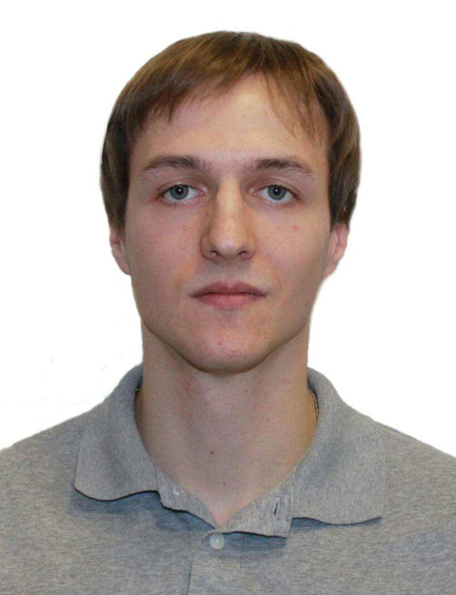

Юрин Дмитрий Сергеевич
Ruby on Rails разработчик
- Телефон:+7(926)332-39-00
- E-mail: d.s.yurin@mail.ru
- Github
Навыки
- Ruby, Sinatra, Rails;
- HTML, CSS;
- XML, JSON, SQL;
- Rspec.
Образование
- 2014, Московский государственный университет пищевых производств, Факультет экономики и предпринимательства,
Прикладная информатика (в экономике)
- 2018, Управленческий учет в КА 2.0, УТ 11 и erp 2.1 - Быстрый старт за 20 часов, Курсы по 1С
- 2018, Управленческий учет в 1С:ERP 2.2 и подготовка к Аттестации 1С:Специалист-консультант по упр. учету в
ERP 2.x, Курсы по 1С
- 2018, Разработка и оптимизация запросов в 1С:Предприятие 8.3, Курсы по 1С
- 2019, Курс по программированию на Руби от Романа Пушкина, rubyschool.us
- 2019, Интенсив по Ruby on Rails, Хороший программист
Опыт работы
Программист 1C 8 в франчайзи 1С ООО "Артель мастеров" (2014 - настоящее время)
Обязанности:
- Разработка ПО на базе платформы 1С Предприятие 8.1-8.3;
- Работа с legacy-кодом, legacy-системами;
- Рефакторинг программного кода;
- Поддержка клиентов и помощь в решении проблем;
- Прием мыслей клиента и преобразование их в что-то, похожее на ТЗ.
Проекты:
- Разработал и внедрил систему складской логистики в магазине автозапчастей. В основе системы - терминалы
сбора данных(ТСД), которые позволяют кладовщику практически не задумываться о том, где и какую работы
выполнять. Кладовщику нужно только взять ТСД, выбрать доступное действие и следовать указаниям ТСД: куда
пойти, какой товар взять и куда отнести. Задания на различные перемещения формируются в системе заявкой от
клиента. В любой момент можно открыть отчёт и увидеть: где и в каком состоянии находится товар клиента и
когда по плану он должен быть отгружен.
- Разработал и внедрил систему закупки товаров под заказ клиента на базе 1С УНФ 1.4 в компании, занимающейся
продажей компьютерного "железа". Система принимает заказ клиента и
отправляет сигнал в отдел закупок. В отделе закупок по поступившему заказу проводится ряд мероприятий,
связанных с проверкой наличия товара у поставщика, проверкой цены поставщика и сроков доставки. Информация
по каждому этапу отражается в системе. В любой момент может быть создана корректировка заказа как со стороны
отдела продаж, так и со стороны отдела закупок.